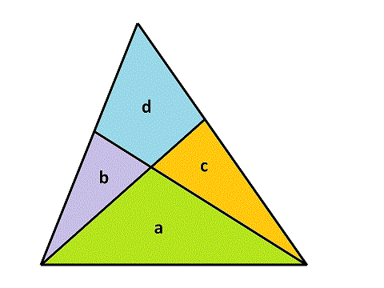

A triangle is cut into four pieces by two straight lines, each starting at one vertex and ending on the opposite edge. This results in forming three smaller triangular pieces, and one quadrilateral. If the original triangle has an integral area, it is often possible to choose cuts such that all of the four pieces also have integral area. For example, the diagram below shows a triangle of area $55$ that has been cut in this way.

Representing the areas as $a, b, c$ and $d$, in the example above, the individual areas are $a = 22$, $b = 8$, $c = 11$ and $d = 14$. It is also possible to cut a triangle of area $55$ such that $a = 20$, $b = 2$, $c = 24$, $d = 9$.
Define a triangle cutting quadruple $(a, b, c, d)$ as a valid integral division of a triangle, where $a$ is the area of the triangle between the two cut vertices, $d$ is the area of the quadrilateral and $b$ and $c$ are the areas of the two other triangles, with the restriction that $b \le c$. The two solutions described above are $(22,8,11,14)$ and $(20,2,24,9)$. These are the only two possible quadruples that have a total area of $55$.
Define $S(n)$ as the sum of the area of the uncut triangles represented by all valid quadruples with $a+b+c+d \le n$.
For example, $S(20) = 259$.
Find $S(10000)$.
solve(max_limit=20) → ?solve(max_limit=10000) → ?